Roster portraits & character design references · Art pass 0.54
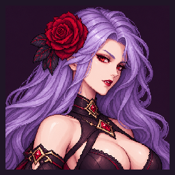
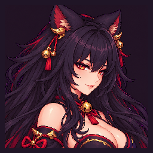
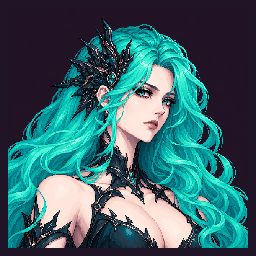
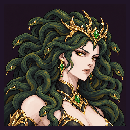
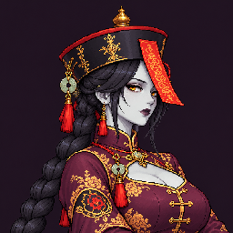
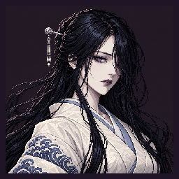
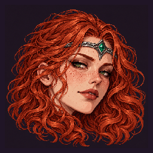
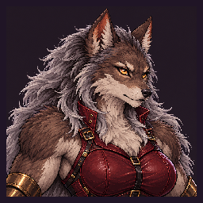
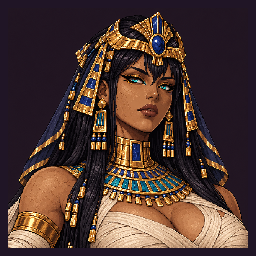
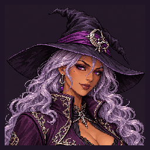
Full-body references for the remaining five fighters. All ten roster fighters now have their rebuilt animation passes. Mummy uses the approved Regal Empress A design.
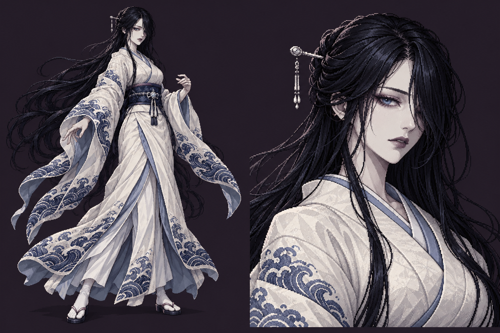
A sorrowful ghost noblewoman with ink-black hair, an ivory kimono and indigo wave embroidery. Her drifting sleeves carry the silhouette of an evasive phase fighter.
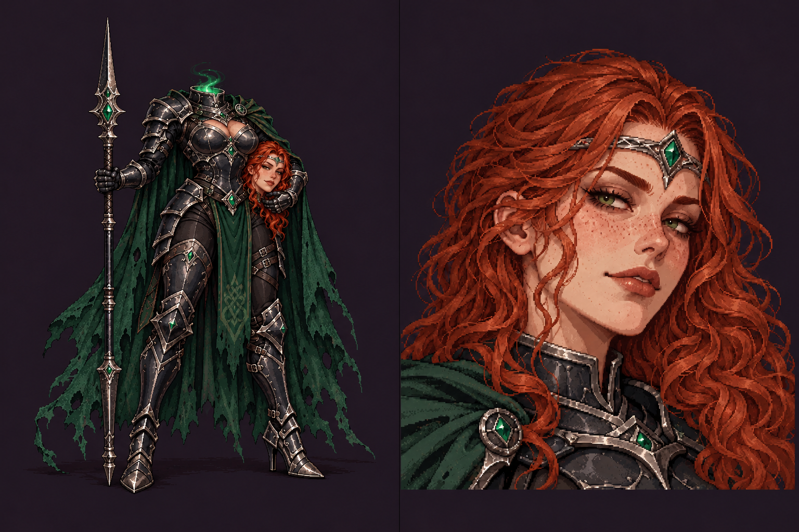
A copper-haired headless knight in black and silver armor with emerald fittings. She carries her own head beneath one arm and fights with a long lance.
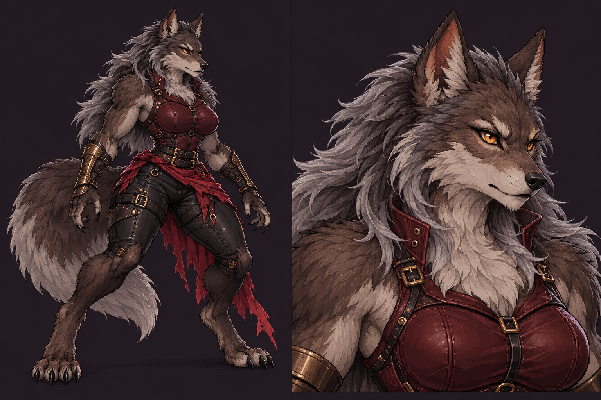
A powerful wolf warrior with amber eyes, a silver mane, burgundy leather armor and a ragged red sash. Her claws, digitigrade legs and heavy tail define the Red Moon Pack hunter.
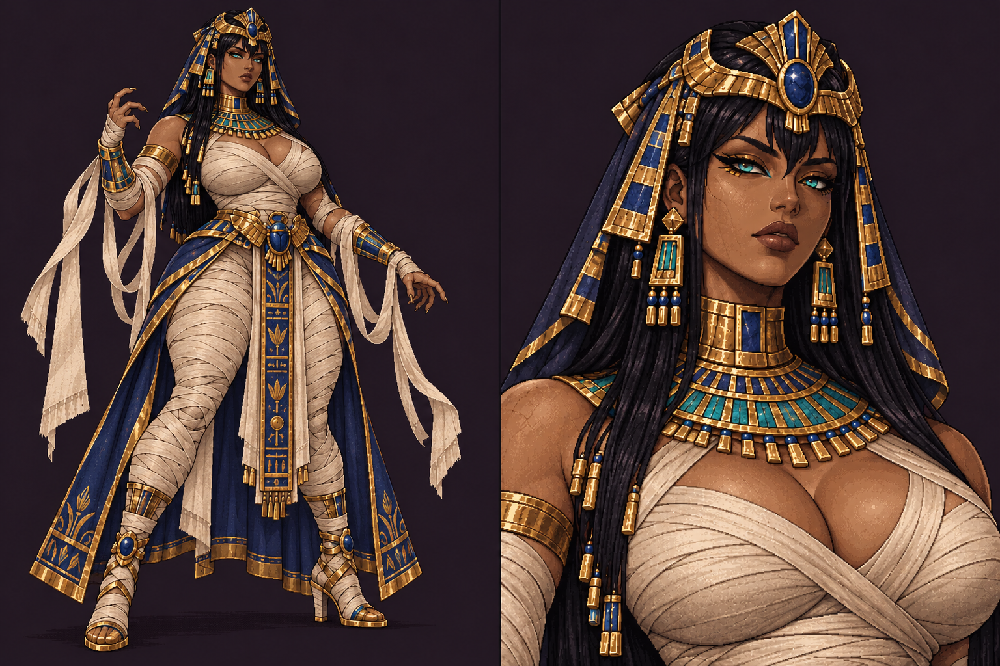
An ancient queen in ceremonial ivory linen, lapis and gold. Turquoise eyes and trailing bandages reflect her Gilded Tomb curses.
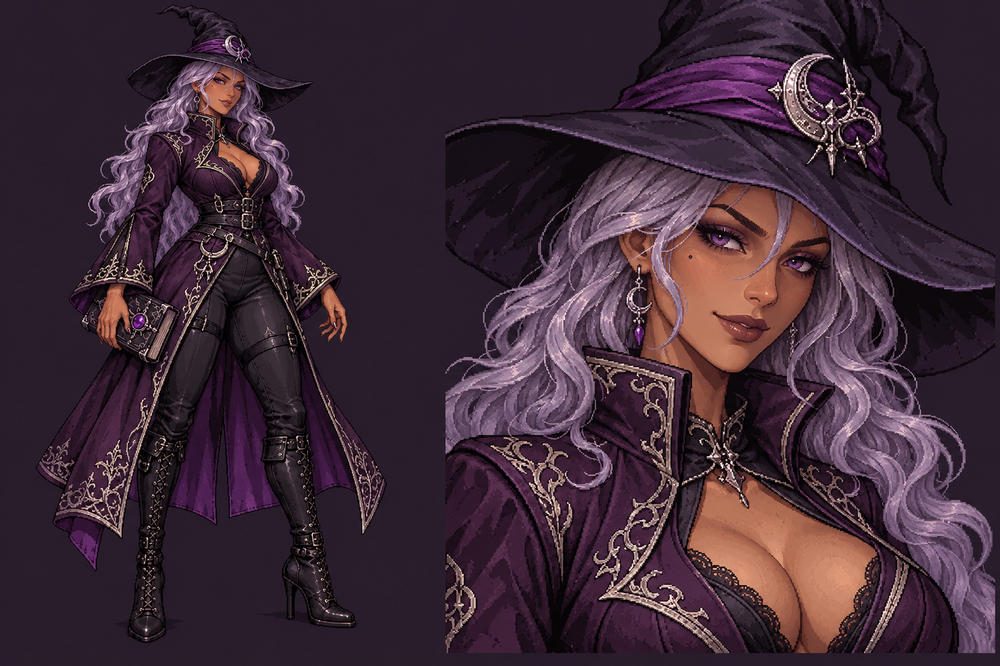
A knowing sorceress in an aubergine coat, silver-lilac hair and a crooked crescent hat. Her grimoire belongs to the Hex Circle.